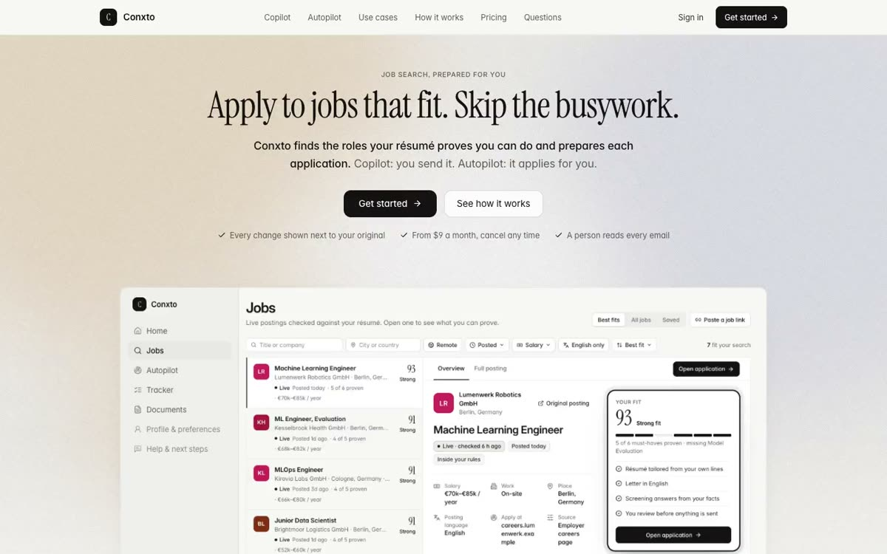
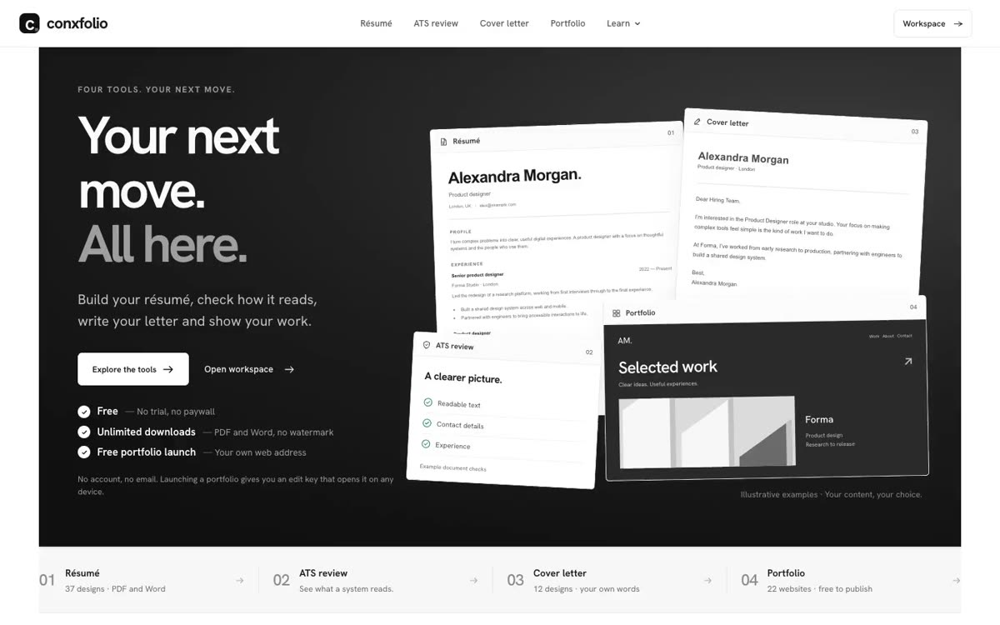
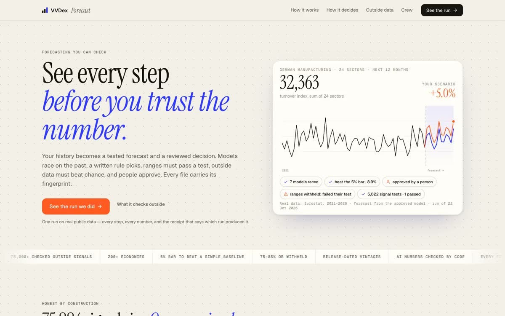
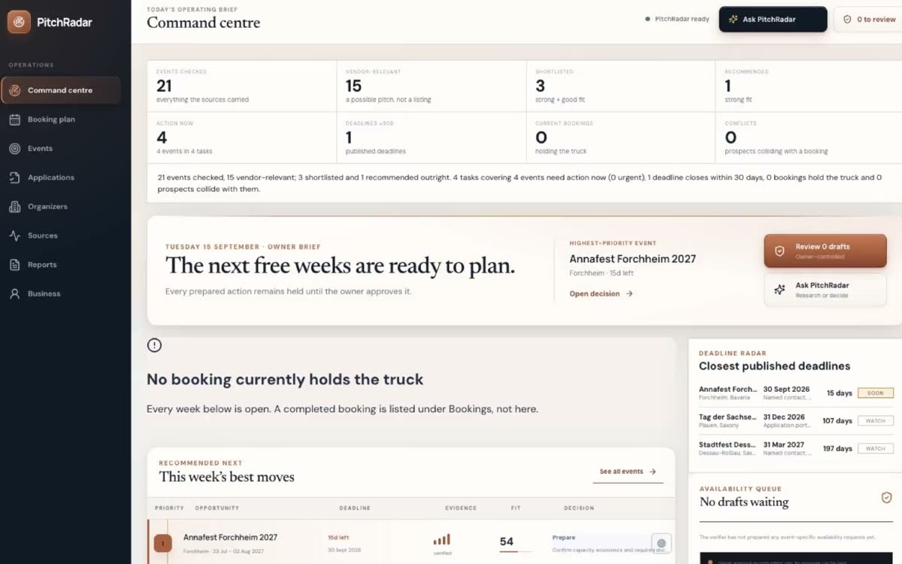

Vamsi Venkatesh, AI product engineer.
I design, build and run AI products end to end: the product, the agents, the servers and the tests that prove it works.
Open to work · Magdeburg, Germany · updated 5 Nov 2026
Seven products I designed, built and run end to end.
Scroll: each product moves into focus with its outcome and numbers. The loops are real: two are a task and a run recorded on the public sites, the rest are recordings of them.
VVDex Platform
Test AI models and agents on real work: a real task in a sealed sandbox, hidden tests decide, and a signed receipt anyone can check.
Conxto
Reads live job postings against your résumé, checks every requirement and prepares the whole application. With Copilot you send; Autopilot applies inside rules you set.
VVDex Engine
Describe the work in one paragraph and the Engine compiles it into a running service: what runs by itself, what waits for you, and what never happens.
UnboundPDF
Every PDF tool in the browser. The file never leaves the tab.
Conxfolio
Your next move, all here: build your résumé, check how it reads, write your letter and show your work.
Forecasting
Models race on the past, a written rule picks the winner, ranges must pass a test or are withheld, outside signals must beat chance, and a person approves before anything is issued.
VVDex Trading
Live market microstructure beside a hash-chained record of every dated call. Paper only.
Built and run for two clients.
Systems I designed and run for businesses: the work is mine, the business is theirs. Details stay at what each client has made public.
PitchRadar
Finds the events a mobile food vendor should trade at, ranks them on rules you can read, and hands the owner one brief with the evidence behind every line. Running for a client.
FarmQuick · Buyer Radar
End to end for a B2B produce business: the ordering site buyers use, and Lead Desk, the agent that finds the next buyer every morning.
All nine, at a glance.
Seven products and two client systems. Keys 1–7 pop a product on the board at the top; the cards open the case studies.









From a one-line problem to a product that keeps its receipts.
Rules first, a model second.
Each product starts as one problem and one plan. What can be written as a rule stays a rule; a model is used only where rules cannot answer.
- PitchRadar: no model in the score
- FarmQuick: leads scored by written rules
- Conxfolio: nine deterministic résumé specialists
Nothing ships past a failing gate.
Large automated suites and release gates run before a deploy. On UnboundPDF the live page is checked again after it.
- 1,429 tests on VVDex Engine
- 620 on PitchRadar · 550 on VVDex Platform
- UnboundPDF: audit in 3 browser engines + checksum sweep
Run it, and keep the receipts.
The live products run on servers I administer. People keep the final say, and every run leaves a record anyone can check.
- Engine runs sealed under one SHA-256 digest
- Platform runs carry an Ed25519-signed receipt
- Copilot: you send every application
Shipped, running, and checked.
Commit activity, last 26 weeks
11 May 2026 – 5 Nov 2026What this counts: unique commits (deduplicated across worktrees and branches) authored under my git identity in 36 of my local repositories, read with git log on 5 Nov 2026. Third-party clones and my notes vault are excluded. It includes commits made by the agents I direct under my identity.
Public URLs, right now
checked 2026-11-05 11:25 UTC- vvdexops.comHTTP 200 · 334 ms
- conxto.comHTTP 200 · 195 ms
- lab.vvdexops.comHTTP 200 · 534 ms
- unboundpdf.comHTTP 200 · 335 ms
- farmquick.inHTTP 200 · 272 ms
- conxfolio.comHTTP 200 · 315 ms
- trading.vvdexops.comHTTP 200 · 297 ms · Research
- lab.vvdexops.comHTTP 200 · 204 ms
One HTTP check from one location at build time, not an uptime history. Green dot: a Live product answering 200.
Recently shipped
from my build log · newest first- Conxto
Overhaul release live: auto-apply, job data, tailoring and UI fixes. Models rotate Claude first, then OpenAI, then DeepSeek.
- Conxfolio
Sitemap cleaned to 365 pages; site added and verified in Bing.
- UnboundPDF
v212 live: search and phone-layout pass. 218 of 218 public pages answer 200.
- Conxfolio
Résumé, letter, ATS and portfolio editors upgraded. ATS text now keeps the résumé's section order; all 22 portfolio designs re-checked live.
- Conxto
Speed pass live: app cold start 10.6 s → 2.7 s, largest paint 7.9 s → 0.83 s.
- UnboundPDF
Remove Background moved off the main thread: Firefox no longer freezes for 20 s; a run now blocks the tab for 211 ms.
- VVDex Engine
Signed webhook writes live: HMAC-signed, idempotent, retried on server errors.
- UnboundPDF
German version live, derived from the English site.
The 70% claim
A directional-accuracy claim was only allowed to stand if it cleared a threshold written down before the measurement. On 5,325 committed calls it measures 0.703 against a declared gate of 0.7178, so the claim stays withdrawn. The full ledger stays public.
An exam lane I could not certify
A pass on the platform survives only on verified containment. I found that one lane's agent could read the gold answers, the hidden tests and its own transcripts, so I withdrew all six of its historical passes and marked the lane not certifiable.
What should we build?
Drag notes onto the board, or tap them. It writes a plain email you can read before you send it. Nothing is stored or sent by this page; your email app does the sending.
What is it?
When?
Budget
Anything else
Drop notes here.
Idea · when · budget · anything else
Hiring for an AI role? Let’s talk.
I am looking for an AI role: AI engineer, AI product engineer or AI evaluation engineer, remote or on-site in Germany, on a team that ships real products. I also build AI products for clients. No visa sponsorship needed.
{ "name": "Vamsi Venkatesh", "role": "AI product engineer", "based": "Magdeburg, Germany", "open_to": ["AI engineer", "AI product engineer", "AI evaluation engineer"], "work": "Remote, or on-site in Germany", "visa": "German residence permit, no sponsorship needed", "email": "vamsi@vamsivenkatesh.com", "linkedin": "linkedin.com/in/vamsivenkatesh", "github": "github.com/vamsi-venkatesh"}